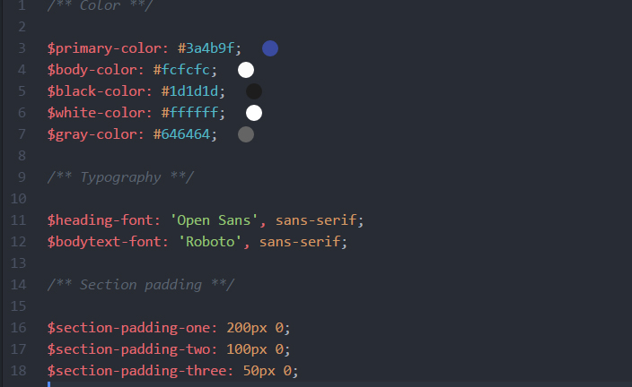

Projektpræsentation
Til dette projekt skulle vi skabe et responsive website, hvor vi skulle finde en kunde efter eget valg med base i Danmark og med faktisk brugere. Vi skulle udvikle en responsive digital løsning med Mobile First tilgang, som skal skabe værdi for kunden.
Kunden blev Murermester Jørgen Høgedal, som har base i Sdr. Omme og udfører primært arbejdsopgaver lokalt med opgaver såsom renovering, nybyggeri o.m.m. Han har ikke haft en hjemmesiden til virksomheden, og det stod højt på ønskelisten.
Ønsket er, at hans kunder og potentielle kunder kan få adgang til at se referencer og billeder af tidligere arbejde og nemt finde kontaktoplysninger samt kontaktes via. en kontaktformular.
Arbejdsproces
Research & observation
I vores research og observation, lagde vi mærke til at kontakten med internet var minimal og strakte sig kun til et telefonnummer på Krak. Vi tog på feltarbejde i Billund, hvor Murermester Jørgen Høgedal arbejdede på to forskellige huse. Vi observerede arbejdet og tog billeder af hans færdig arbejdede huse og fik også interviewet Jørgen.
Vi fik generelle informationer omkring hans firma, kundesegment, samarbejdspartnere osv. samt hans styrker og svagheder, som hjalp os meget med at udarbejde vores SWOT analyse og BMC-model.

Projektplan
For at bevare overblikket over projekt og gøre det mere nemt for mig og gruppen, har vi benyttet os af Trello. Vi fik skrevet alle arbejdsopgaverne ind og fordelte dem under To-do, Doing og Done. Det hjalp os meget med at holde et godt overblik over vores proces.
Kortsortering & IA
Vi lavede en lukket kortsortering ved at skrive menupunkterne, som vi ønskede på den færdige hjemmeside ned, og derefter placerede gule sedler med de emner, vi ønskede under de pågældende menupunkter. Vi fik derefter en potentiel kunde – Helene ”Det midaldrende par” til at komme med feedback, løsninger og ændringer.
Efter feedbacket blev det endelige informationsarkitektur stillet op sådan her:
Moodboard
I processen, udarbejdede vi et moodboard. Vi overvejede opsætning af layout af hjemmesiden, valg af typografi og farver. Moodboardet gav os en inspirerende stemning og hjalp os med at idegenere.

Typografi & farver
Da firmanavnet har et ø med sig, var det vigtigt for os at finde en typografi, der accepterede et ø og samtidig så flot ud.
Det var også vigtigt for os at finde en typografi, der gav et udtryk af professionalisme. Tanken var at en typografi med et professionelt look udviste troværdighed – og det var især vigtigt for en murermester firma.
Derfor valgte vi sans-serif skrifttypen Open Sans, som skulle gøre sig gældende på overskrifterne. Det der skal gøre sig gældende for brødteksterne er sans-serif fonten Roboto.

Den blå farve bliver typisk anvendt til at symbolisere tillid, og det er også en maskulin farve, hvilket passer meget godt til murerarbejde.
Logo process
Det næste i vores proces var at udarbejde et logo til sitet. Her valgte vi i gruppen at gå hver til sit og sidde og skitsere hver vores logo:

Efter feedback, gik vi tilbage til vores skitser og så, at vi havde leget med ideen om at benytte mursten i logoet. Vi lod den blå farve være med for at vise genkendelighed og simplificere logoet.
Wireframes
Vi gik videre til wireframes, hvor vi lavede wireframes af sitet med Mobile First, og derefter lavede vi for desktop. Layoutet skulle være enkelt og pænt, og det var vigtigt, at de hang sammen.
Mockups
Vi benyttede os af de bedste features fra de forskellige wireframes for at nemlig at opnå vores resultat. Vi forsøgte at gøre det simpelt med et flot og brugervenligt design.
Vi ønskede ikke at forvirrer de potentielle kunder med unødigt indhold, når det besøger hjemmesiden. Hjemmesidens udseende skulle afspejle firmaets kvalitet af arbejde.
Et uprofessionelt design vil give et dårligt indtryk. Den gennemgående blå farve på hjemmesiden vil blive associeret med tillid, hvilket er det firmaet skal associeres med. Den blå farve sammen med grå og hvid skaber en god kontrast, og der holdes en rødtråd mellem logoet og siden.

Mockups
Vi benyttede os af de bedste features fra de forskellige wireframes for at nemlig at opnå vores resultat. Vi forsøgte at gøre det simpelt med et flot og brugervenligt design.
Vi ønskede ikke at forvirrer de potentielle kunder med unødigt indhold, når det besøger hjemmesiden. Hjemmesidens udseende skulle afspejle firmaets kvalitet af arbejde.
Et uprofessionelt design vil give et dårligt indtryk. Den gennemgående blå farve på hjemmesiden vil blive associeret med tillid, hvilket er det firmaet skal associeres med. Den blå farve sammen med grå og hvid skaber en god kontrast, og der holdes en rødtråd mellem logoet og siden.
Bootstrap
Vi valgte at lave hjemmesiden ved hjælp af Bootstrap, da frameworket allerede indeholder et grid-system, som gør det nemmere at bygge en responsivt website. Boostrap har den fordel, at man arbejder i kolonner, som rammer og tilpasser sig de forskellige skærmstørrelser – det kræver først, at man har en god forståelse for HTML kodning og CSS herunder Media queries.
Navigation
Vi anvendte Boostraps standard navigationsbar, men fik derefter tilpasset stylingen ift. vores mockup, som vi fik designet. Vi fik ændret Bootstraps menu, at når man klikker på hamburgeren, så dukker der et kryds frem for at indikere at menuen er åben.
Sass
Vi har valgt at anvende Sass til dette projekt, da det skaber et bedre overblik over alle vores CSS-koder. Sass har gjort det muligt at spare tid i henhold til CSS, da man gør brug af variabler. Og med hjælp af Sass, kunne vi samle alt vores Sass filer i et main CSS-fil, som vi kalder på.
Reflektion
Jeg har fået en bedre forståelse for anvendelse af Business Model Canvas modellen, da vi havde en masse informationer af kunden, dog manglede vi at fylde på med grønne sedler ift. udviklingsmuligheder for Murermester Jørgen Høgedal. Jeg fik også en dybere forståelse for SWOT-analysen, da vi fik muligheden for at bruge den i praksis på en eksisterende kunde.
I denne omgang ift. sidste case, kunne jeg se det gode i design processen – at designe et mockup med den tankegang, at du sagtens kan kode den og ikke føle dig begrænset og tænke kode i den.
Vi kunne godt have planlagt vores tid bedre. Vi brugte Trello til at holde styr på projektet, men man glemte nærmest tiden, da vi ikke lavede tidsfrister på hver enkelt del af projektet; hvilket resulterede i, at vi havde meget tid i starten af projektet, men følte lige pludselig et kæmpe pres i slutningen.
Vi følte, at vi manglede nogle dele af projektet. Vi havde også mere fokus på vores stærke sider i projektet, hvilket gjorde, at vi ikke havde så meget fokus på vores svage sider. I interaktionsfaget lærte jeg, at det var meget nemmere at arbejde med Mobile First. Jeg plejer at arbejde med Desktop også nedad, men det bliver nogle gange bøvlet, når man kommer ned til små størrelser. Jeg følte ikke, jeg var så meget indover kommunikationsfaget og fik ikke så meget ud af den.
Murermester Jørgen Høgedal